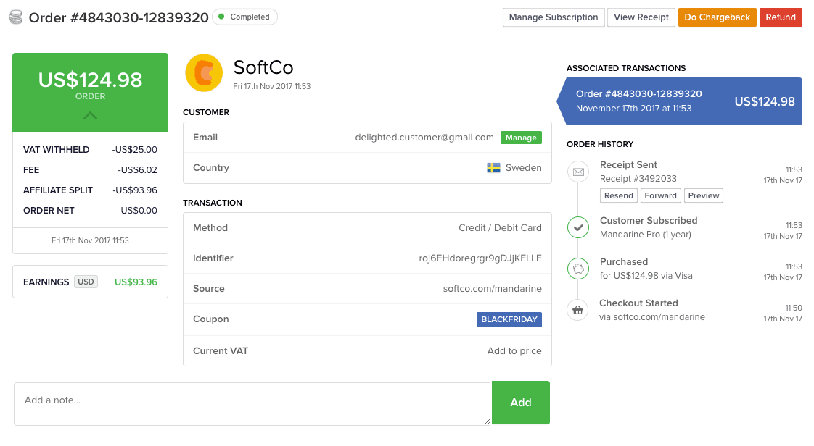
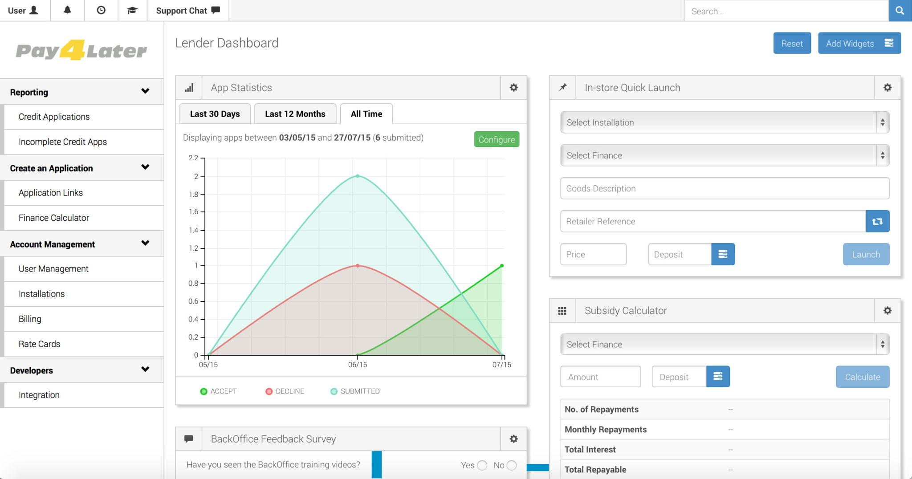
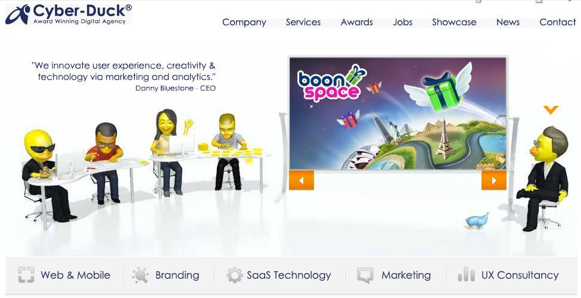

Andrew Mackrodt
Software Engineer, London, UK
Hi, I'm Andrew Mackrodt, a backend and automation engineer based in London, UK.
I've been working in the software industry since 2010, building high quality solutions for start-ups and established companies alike.
Skills
I've worn many hats along the way including Full-Stack Development, DevOps and being a Tech Lead. I'm skilled in agile methodologies, code reviews, design patterns and core principles such as DRY, KISS and SOLID.
The below list contains technologies that I work with on a daily basis and have several years experience in a commercial environment, i.e. my primary stack. It is not comprehensive of all the technologies I work with (e.g. this site uses Vue.js, webpack and sass).
- PHP
- MySQL
- AWS
- Jenkins
- Ansible
- Docker
- Packer
- Vagrant
- Laravel
- Doctrine
- JavaScript
- ChatOps
- Git
- Linux
- New Relic
- CI
Work
I began freelancing in 2018, if you would like samples of my work since then please contact me.
A history of my full-time positions between 2010 and 2018 are listed below.
Paddle
Senior Software Engineer
Responsibilities
- Created a configurable CLI daemon to manage worker pools for async jobs
- Created a modular shared memory adapter in PHP for secure secret usage
- Backported third-party packages to Laravel 4.2 and planned 5.x migration
- Optimized queries to prevent/reduce deadlocks in production
- Automated CloudFlare SecurityLevel adjustment based on app activity
- API integrations included: Currencycloud, CloudFlare and Sentry
Technologies
- php
- laravel
- mysql
- aws
- circleci
- vagrant
Deko - (formerly Pay4Later)
Software Engineer
Responsibilities
- Developed Zend Framework 2 projects, REST APIs and introduced docker
- Managed the automation team (deployment and new environment creation)
- Administered and designed the AWS and Rackspace Cloud infrastructure
- Introduced Ansible for configuration management and atomic deployment
- Performed a zero downtime production data centre migration
- API integrations included: Equifax and CallValidate
Technologies
- php
- zend framework
- angular
- postgresql
- ansible
- aws
- jenkins
- vagrant
- docker
CityHawk - (formerly Ruffl)
Tech Lead
Responsibilities
- Developed public and private REST APIs
- Managed AWS infrastructure and integration: EC2, RDS, SQS, SES, Route 53
- Developed native plugins for iOS and Android to interface with iBeacons
- Developed a billing system with PDF generation and event handlers
- Acted as SCRUM master using YouTrack
- API integrations included: Stripe, APNS, Google, Mandrill and parse
Technologies
- php
- doctrine
- backbone
- ios
- android
- corona sdk
- mysql
- aws
- jenkins
- vagrant
Clear Books
Senior Web Developer
Responsibilities
- Lead a development team of 10 developers from entry to mid-level
- Introduced CI using Jenkins, PHPUnit, PHPCS, PHPMD and Selenium
- Significantly improved backend performance (>50%)
- Administered bare-metal HP hypervisors and RHEL based QEMU guests
- Developed a Document and RPC compatible SOAP service
- API integrations included: HMRC, Companies House, PayPoint and GoCardless
Technologies
- php
- zend framework
- mysql
- qemu
- jenkins
- selenium
Cyber-Duck
Software Engineer
Responsibilities
- Primarily acted as the lead ASP.NET developer maintaining legacy C# and VB.NET projects
- SQL Server 2003 database design and maintenance
- Windows Server 2003 and 2008 R2 configuration
- Secondary responsibilities included PHP, MySQL and front-end development
Technologies
- php
- asp.net
- mysql
- ms sql server
- wordpress
- codeigniter
About
My passion for programming began in the late 90's when I received my first PC. Prior to that I picked up an engineering mindset courtesy of video game cheat cartridges such as the Game Genie and entering small games printed in magazines at the time on my cousin's Amiga. Given my gaming beginnings, I started creating games using OHRRPG and Macromedia Flash. This set me upon my journey to learning how to build applications and later websites and server infrastructure.
I've been creating dynamic sites since 2000, using popular CMS' at the time such as PhpNuke, e107 and vBulletin. Around this time I also picked up an interest in Linux Server administration, desiring to automate administration frustrations around using Remote Desktop with Windows Server 2003. Automation and DevOps/ChatOps culture have been important to my workflow ever since.
After obtaining a degree in Computer Science in 2010 I started my career in the software industry. My primary interests are in backend engineering, i.e. programming, architecture and infrastructure.
Outside of computing I'm still a gamer, the evolution from 2D sprite based games on the Sega Megadrive to the fully immersive VR experiences we have now has been amazing to live through. I also enjoy fitness, particularly running and like to read whenever I get the chance.
Get in touch
For project inquiries please include an approximate timeline and budget.
I typically respond within 48 hours outside of weekends and holidays.